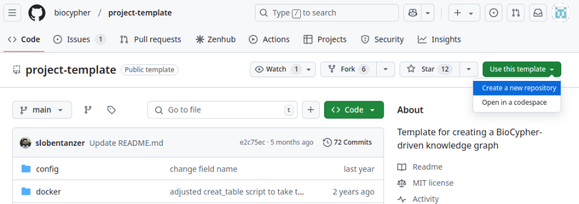

Installation guide
Before diving into developing wonderful use cases with BioCypher, we strongly recommend installing a few prerequisites to ensure a smooth experience. These prerequisites are:
- Python 3 (version >= 3.10)
- Poetry (Python packaging and dependency manager)
- git (version control manager)
- Docker (containerization technology) [optional]
Tip
If any of those pre-requisites is missing, please follow the installation guide in each resource before continue.
Checking prerequisites
- Ensure that your Python version is 3.10 or higher. To check your current Python version, run the following command in
your terminal, Command Prompt, or PowerShell:
2.Ensure you have
poetryinstalled in your machine: - Ensure you have
gitinstalled in your machine:
Option 1. Use a pre-configured project with BioCypher
The easiest way to start using BioCypher is with a pre-configured project that includes all the essential code, dependencies, environment settings, and the BioCypher framework. This setup allows you to focus solely on implementing your use case, with minimal modifications to a few existing files, depending on your needs. If this approach suits you, follow the instructions below to get started.
Step 1: Go to Biocypher project template repository, click on "Use this template", then click on "Create a new repository".

Step 2: Complete the information such as owner, name, description and visibility of your repository.
Step 3: Now, you can clone the repository and navigate into it. For our example, the repository is called "my-knowledge-graph-project". The user hhrobertkoch is a fictional user in honor to Robert Koch, replace this user with your own.
Step 4: Open the pyproject.toml file, change the following sections, and do not forget save changes.
name: replace the default project's name (biocypher-project-template) with the name you have defined earlier (in our casemy-knowledge-graph-project).description: change the default description for a meaningful one based on your use case.
Step 4: Install the dependencies using Poetry.
Step 4: Run the script create_knowledge_graph.py
Step 1: Clone the project template repository, rename it, and navigate to the project folder.
For this example, we are going to name the project as my-knowledge-graph-project, but you can name it as you want.
git clone https://github.com/biocypher/project-template.git
mv project-template my-knowledge-graph-project
cd my-project
Step 2: Make the repository your own repository.
rm -rf .git
git init
git add .
git commit -m "Initial commit"
# (you can add your remote repository here)
Step 3: Open the pyproject.toml file, change the following sections, and do not forget save changes.
name: replace the default project's name (biocypher-project-template) with the name you have defined earlier (in our casemy-knowledge-graph-project).description: change the default description for a meaningful one based on your use case.
Step 4: Install the dependencies using Poetry.
Step 4: Run the script create_knowledge_graph.py
Docker (all batteries included!)
Play with your data in Neo4j with this Docker container
The project template includes a Docker compose workflow that allows to:
- Create an example database using BioCypher.
- Load the data into a dockerized Neo4j instance automatically.
Once you have created your project using any of the previous options, please follow the steps below:
Step 1: Start a single detached Docker container running a Neo4j instance, which contains the knowledge graph built by BioCypher as the default Neo4j database.
Step 2: Open the Neo4j instance in a web browser by typing the address and port: localhost:7474.
Authentication is deactivated by default and can be modified in the docker_variables.env file (in which case you need to provide the .env file to the deploy stage of the docker-compose.yml).
Docker Workflow
The Docker Compose file creates three containers: build, import, and deploy. These containers share files using a Docker Volume. In the BioCypher build procedure, the biocypher_docker_config.yaml file is used instead of biocypher_config.yaml, as specified in scripts/build.sh.
- Containers and their functions
- build: Installs and runs the BioCypher pipeline.
- import: installs Neo4j and executes the data import.
- deploy: deploys the Neo4j instance on localhost.
This three-stage setup strictly is not necessary for the mounting of a read-write instance of Neo4j, but is required if the purpose is to provide a read-only instance (e.g. for a web app) that is updated regularly;for an example, see the meta graph repository. The read-only setting is configured in the docker-compose.yml file(NEO4J_dbms_databases_default__to__read__only: "false") and is deactivated by default.
Option 2. Install from a Package Manager
Note: about Poetry
Poetry is a tool for dependency management and packaging in Python. It allows you to declare the libraries your project depends on and it will manage (install/update) them for you. Poetry offers a lockfile to ensure repeatable installs, and can build your project for distribution. For information about the installation process, you can consult here.
Note: Virtual environment and best practices
To follow best practices in software engineering and prevent issues with your Python installation, we highly recommend installing packages in a separate virtual environment instead of directly in the base Python installation.
-
Create and activate a virtual environment. Replace
<name-of-environment>with the name of the environment you desire, i.e.biocypher_env -
Install BioCypher package from
pip. Type the following command to install BioCypher package. Note: do not forget to activate a virtual environment before do it.
For Developers
If you want to directly install BioCypher, here are the steps (requires Poetry):
Poetry creates a virtual environment for you (starting withbiocypher-; alternatively you can name it yourself) and installs all dependencies.
If you want to run the tests that use a local Neo4j or PostgreSQL DBMS (database management system) instance:
-
Make sure that you have a Neo4j instance with the APOC plugin installed and a database named
testrunning on standard bolt port7687 -
A PostgreSQL instance with the psql command line tool should be installed locally and running on standard port
5432 -
Activate the virtual environment by running
poetry shelland then run the tests by running % pytest in the root directory of the repository with the command line argument--password=<your DBMS password>.
Once this is set up, you can go through the tutorial or use it in your project as a local dependency.